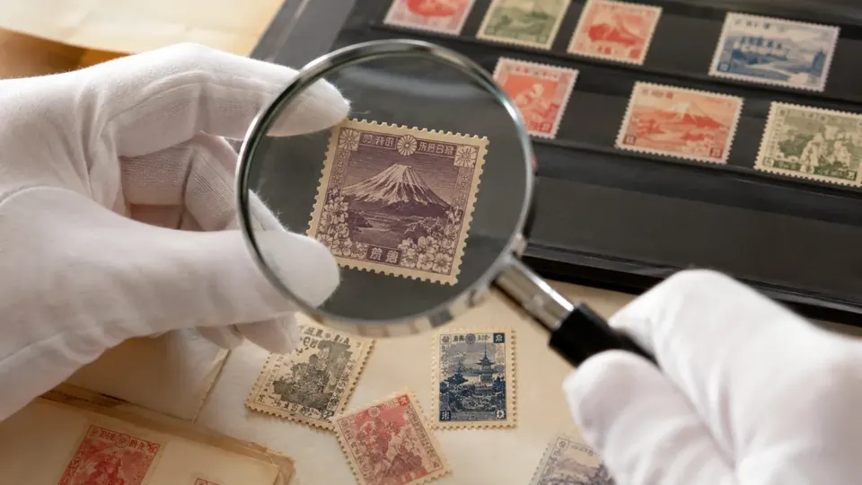
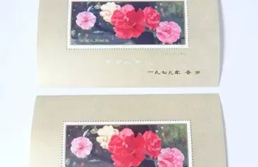

2026年10月更新
古い切手、
そのまま
処分していい？
切手買取
6社を比較
実家で見つかった切手アルバム。数えず、仕分けず、自宅で査定してもらえる出張買取を比べました。

- 比較6社
- 査定無料6社
- 出張対応6社
※写真はイメージです。査定無料・出張対応は各社公式サイトの掲載内容（2026年10月13日確認）。
PR本ページは広告・アフィリエイトリンクを含みます。アフィリエイトサイトのため、ウリエル・バイセル等のプロモーションを含みます。福ちゃん・日晃堂・買取大吉・なんぼやへのリンクは広告リンクではありません（2026年10月時点）。順位・評価は編集部の採点基準によるものです（ランキング調査概要）。
※会話は編集部が作成した典型的な場面の例で、実在の利用者の口コミではありません。
切手買取おすすめBEST3
- 1
編集部評価5.0
そのまま出張査定
最短翌日に自宅で査定。手数料・キャンセル料0円。査定員対応満足度93.29%※1
24時間受付
公式サイト - 2

編集部評価4.8
東証上場企業が運営
仕分け不要でそのまま査定。24時間365日受付。累計買取4,800万点以上※2
24時間365日受付
公式サイト - 3
編集部評価4.5
記念・中国切手の実例
仕分け不要。対応地域なら即日出張も。手数料・キャンセル料0円
1点から相談OK
詳しく見る
※1 自社調べ。2025年7月〜2026年6月に実施した出張査定ご利用のお客様アンケート（有効回答283件）で、5段階評価のうち「大変満足」「やや満足」と回答した方の割合
※2 2015〜2025年の合計買取数（バイセル調べ）
ウリエルの
切手買取実績
横にスクロールできます
切手アルバム

買取価格100,000円※キャンペーン期間中の買取例（公式記載）
| 品目 | 桜切手などの普通切手まとめて（切手アルバム） |
|---|---|
| 買取日 | 2021/12/26 |
| 地域 | 東京都西東京市・出張買取 |
手数料・キャンセル料0円
ウリエルで無料査定写真・実績：ウリエル公式 切手買取ページ（2026年10月13日確認）。複数点をまとめた過去の買取例で、同じ切手でも状態や時期により査定額は変わります。
額面だけで判断しないほうがいい理由
同じ古い切手でも、発行時期・希少性・保存状態・シートかバラかで評価は変わります。額面だけで捨てたり交換したりする前に、切手に詳しい査定士に一度見てもらいましょう。



画像出典：ウリエル公式サイト掲載の買取実績写真・公式LPの参考画像
切手は「出張買取」が向いている理由
アルバムや箱に入った大量の切手は、重くて持ち運びが大変です。査定士に自宅まで来てもらう出張買取なら、数えたり運んだりする手間がかかりません。
| お店に持ち込む | 出張買取を使う | |
|---|---|---|
| 運ぶ手間 | アルバムや箱を店まで運ぶ | 不要・自宅で待つだけ |
| 準備 | 枚数を数えてから行くと時間がかかる | そのまま見てもらえる |
| 売らない場合 | もう一度持ち帰る | 断っても費用0円※ |
| 日時 | 営業時間内に行く | 希望日を相談できる |
※本ページで紹介する6社は、いずれも査定料・キャンセル料がかからないと案内しています（各社公式サイト、2026年10月13日確認）。出張買取は特定商取引法の「訪問購入」にあたり、書面を受け取った日から8日以内はクーリング・オフができます。
出張買取を選ぶときに見たい3つのポイント
- POINT01
仕分けず、状態が悪くても見てもらえるか
バラ・台紙貼り・アルバムのまま、汚れや破れがあっても相談できるかを確認します。比較表「状態・量の対応」タブで比較
- POINT02
すぐ来てもらえて、その場で現金になるか
最短の訪問日の目安、24時間申し込めるか、その場で現金で受け取れるかを確認します。比較表「出張の頼みやすさ」タブで比較
- POINT03
出張・査定・キャンセルが無料か
金額を聞いてから決められるよう、断っても費用がかからないかを確認します。比較表「出張の頼みやすさ」タブで比較
切手買取6社の比較表3つのポイントを6項目に分けて採点しました
| サービス | 編集部評価 | 得意なこと | 公式 |
|---|---|---|---|
| 1ウリエル | 編集部評価5.0 | 状態不良・大量のバラ・切手アルバムもそのまま
| 手数料・キャンセル料0円 公式 |
| 2 | 編集部評価4.8 | 東証上場企業が運営・出張/店頭/宅配から選べる
| 24時間365日受付 公式 |
| 3福ちゃん | 編集部評価4.5 | 記念・中国切手の実例が豊富・即日出張
| 詳細 |
| 4 | 編集部評価4.3 | 骨董・美術品の買取店・状態の悪い切手も相談
| 詳細 |
| 5買取大吉 | 編集部評価4.3 | 全国に店舗網・24時間総合受付
| 詳細 |
| 6なんぼや | 編集部評価4.3 | 店舗＋出張・最短当日訪問
| 詳細 |
| サービス | 状態の悪い切手 | 大量・アルバムのまま |
|---|---|---|
| 1ウリエル | ◎汚れ・破損で他店に断られた切手でも買取できる場合あり | ◎バラ・台紙貼り（アルバム）・価値不明もそのまま。その場で追加OK |
| 2 | ◎シミ・汚れ・台紙貼りなども買取保証（出張・店頭） | ◎仕分け不要・台紙貼り・バラもそのまま査定 |
| 3福ちゃん | ○古い・汚れのある切手も査定（状態により買取不可あり） | ◎仕分け不要、段ボールやアルバムのバラ切手も |
| 4 | ◎破れ・汚れ・シミ、他店で断られた切手も | ○ボストーク（ストックブック）の買取実績 |
| 5買取大吉 | ○どんな状態の切手でも相談 | ○台紙に貼った切手も相談 |
| 6なんぼや | ◎汚れ・キズ・シミの訳あり品もしっかり買い取り | ○玄関先で大量査定・バラ1枚から |
| サービス | 訪問の早さ・現金 | 費用 | 受付 |
|---|---|---|---|
| 1ウリエル | ◎最短翌日査定・その場で現金支払い・玄関先査定OK | ◎出張料・査定料・キャンセル料0円 | ◎24時間受付（年末年始除く） |
| 2 | ○その場で現金化（最短訪問日の記載なし） | ◎査定料・キャンセル料など各種無料 | ◎24時間365日受付（電話） |
| 3福ちゃん | ◎即日出張買取（対応地域）・出張はその場で現金 | ◎訪問料・査定料・送料・振込手数料無料、キャンセル料なし | ○電話8:00〜20:00（申込は24時間） |
| 4 | ○その場で現金お手渡し（最短訪問日の記載なし） | ◎出張料・査定料などの手数料は全て無料、キャンセル料なし | ○8:00〜20:00（年中無休・年末年始除く） |
| 5買取大吉 | ○その場で即現金払い（最短訪問日の記載なし） | ◎査定料・出張料・買取手数料・キャンセル料すべて無料 | ◎総合受付24時間・年中無休（年末年始除く） |
| 6なんぼや | ◎最短当日訪問・即現金買取 | ○査定料・キャンセル料無料（出張料の明記は今回確認できず） | ○電話10:00〜21:00 |
※◎＝5点・○＝4点・△＝3点。各社公式サイトの記載（2026年10月13日確認）をもとにした編集部の採点で、編集部評価は6項目の平均です（採点基準）。
6社の早見表右上ほど「状態・量を問わず」「自宅で手軽に」頼めます
- ✔ 状態不良・大量もそのまま
- ✔ 最短翌日・24時間受付
※横軸＝「状態の悪い切手」＋「大量・アルバムのまま」、縦軸＝「24時間受付」＋「費用0円」＋「訪問の早さ」の採点合計で配置（同じ点数の会社は重ならないよう左右にずらして表示）。配置の基準
ウリエル × バイセル
2社の見積りで納得して売りましょう！
まずは仕分け前のアルバムを、自宅でまとめて見てもらう
ウリエルの詳細- 価値の分からない切手もそのまま
バラ・台紙貼り・汚れのある切手も「査定大歓迎」と公式に記載。 - 最短翌日に訪問・その場で現金
出張料・査定料・キャンセル料は0円、24時間受付。
手数料・キャンセル料0円
ウリエルの公式サイトで無料査定を申し込む
大手のもう1社の見積りと比べる
- 東証上場企業が運営
累計買取4,800万点以上（2015〜2025年、バイセル調べ）。 - 汚れ・台紙貼りも買取保証
出張・店頭なら状態の悪い切手も買取保証の対象。
24時間365日受付
バイセルの公式サイトで無料査定を申し込む
※2社とも査定後のキャンセルは無料です。金額を聞いてから決められます。
切手買取おすすめランキング編集部の採点（ランキング調査概要）
迷ったら1位のウリエルに。見積りを比べたい方は2位のバイセルもあわせて申し込むのがおすすめです。
1ウリエル編集部評価5.0
価値が分からない・汚れた切手もアルバムのまま！
最短翌日に自宅で査定、その場で現金払い

手数料・キャンセル料0円
ウリエルの公式サイトで無料査定を申し込む
特徴
- 査定員対応満足度93.29%（出張査定利用者アンケート）※公式
- 最短翌日に自宅で査定、その場で現金払い※公式
- バラ・台紙貼り・価値不明・汚れのある切手もそのまま相談※公式
- 出張料・査定料・キャンセル料0円、24時間受付※公式
※1 自社調べ。2025年7月〜2026年6月に実施した出張査定ご利用のお客様アンケート（有効回答283件）で、5段階評価のうち「大変満足」「やや満足」と回答した方の割合
ウリエルの編集部評価 編集部評価5.0
- 24時間受付◎24時間受付（年末年始除く）
- 費用0円◎出張料・査定料・キャンセル料0円
- 状態不良OK◎汚れ・破損で他店に断られた切手でも買取できる場合あり
- 大量・アルバム◎バラ・台紙貼り（アルバム）・価値不明もそのまま。その場で追加OK
- 訪問の早さ◎最短翌日査定・その場で現金支払い・玄関先査定OK
- 実績公開◎写真つき実績・利用者の声・満足度93.29%（自社調べ）
※◎＝5点・○＝4点・△＝3点。各社公式サイトの記載をもとにした編集部の採点です（採点基準）
| 買取対象 | 出張エリア |
|---|---|
| 記念・特殊・中国・戦前切手、月に雁・見返り美人など19品目（公式LP） | 関東・東海・関西ほか（訪問先は申込時に案内） |
| 買取方法 | 費用 |
| 出張・店舗・催事 | 出張料・査定料・キャンセル料 0円 |
| 受付時間 | 支払い |
| 24時間（年末年始除く） | その場で現金 |
出典：ウリエル公式 切手買取ページ・公式LP（2026年10月13日確認）
横にスクロールできます
買取実績1
| 品目 | 毛沢東関連切手などのコレクション |
|---|---|
| 買取価格 | 200,000円 |
| 買取日 | 2021/09/11 |
買取実績2
| 品目 | 赤猿切手を含む中国切手コレクション |
|---|---|
| 買取価格 | 150,000円 |
| 買取日 | 2021/12/15 |
買取実績3
| 品目 | 月に雁切手などの切手シート複数点 |
|---|---|
| 買取価格 | 120,000円 |
| 買取日 | 2024/05/06 |
買取実績4
| 品目 | 桜切手などの普通切手まとめて（切手アルバム） |
|---|---|
| 買取価格 | 100,000円 |
| 買取日 | 2021/12/26 |
| 備考 | キャンペーン期間中の買取例 |
買取実績5
| 品目 | 竜文切手を含む切手コレクション |
|---|---|
| 買取価格 | 65,000円 |
| 買取日 | 2023/09/26 |
買取実績6

| 品目 | 立太子礼記念切手などのコレクション |
|---|---|
| 買取価格 | 50,000円 |
| 買取日 | 2024/05/19 |
写真・実績：ウリエル公式 切手買取ページ（2026年10月13日確認）。過去の買取例で、査定額は状態や時期により変わります。
編集部のイチオシポイント
ウリエルは遺品整理・生前整理の大手・株式会社クオーレが運営する出張買取の専門店です。公式LPでは記念・特殊・中国・戦前切手など19品目を案内し、バラバラ・価値が分からない・汚れや破損・台紙貼りの切手も「査定大歓迎」としています。実家で切手アルバムがまとめて見つかり、仕分けずにそのまま見てほしい人に最初に相談してほしい1社です。
ウリエルの利用者の声（公式掲載）
 50代女性東京都板橋区
50代女性東京都板橋区実家から大量の切手が出てきて、どうすればいいか分からなかったところ、出張買取で丁寧に対応してもらえた——という趣旨の声が公式サイトに掲載されています。
※公式サイト掲載の利用者の声を編集部が要旨として紹介（文面の転載はしていません）。個人の感想です。出典：ウリエル公式 普通切手買取ページ
ページへ
手数料・キャンセル料0円
ウリエルの公式サイトで無料査定を申し込む
2バイセル編集部評価4.8
東証上場企業が運営する大手の安心感！
汚れ・台紙貼りの切手も出張・店頭なら買取保証

24時間365日受付
バイセルの公式サイトで無料査定を申し込む
特徴
- 東証上場企業が運営、累計買取4,800万点以上※2※公式
- 出張・店頭・宅配の3つの方法から選べる※公式
- シミ・汚れ・台紙貼りも買取保証（出張・店頭）※公式
- 査定料・キャンセル料など各種無料、女性査定士も在籍※公式
※2 2015〜2025年の合計買取数（バイセル調べ）
バイセルの編集部評価 編集部評価4.8
- 24時間受付◎24時間365日受付（電話）
- 費用0円◎査定料・キャンセル料など各種無料
- 状態不良OK◎シミ・汚れ・台紙貼りなども買取保証（出張・店頭）
- 大量・アルバム◎仕分け不要・台紙貼り・バラもそのまま査定
- 訪問の早さ○その場で現金化（最短訪問日の記載なし）
- 実績公開◎写真つき実績・利用者の声・累計4,800万点（当社調べ）
※◎＝5点・○＝4点・△＝3点。各社公式サイトの記載をもとにした編集部の採点です（採点基準）
| 買取対象 | 出張エリア |
|---|---|
| 普通・記念・特殊・中国切手、はがき | 全国（離島を除く） |
| 買取方法 | 費用 |
| 出張・店頭・宅配 | 査定料・キャンセル料など各種無料 |
| 受付時間 | 支払い |
| 24時間365日（電話） | その場で現金化 |
出典：バイセル公式 切手買取ページ（2026年10月13日確認）
横にスクロールできます
買取実績1

| 品目 | 前島密（1円普通切手）／オオムラサキ（75円普通切手）など |
|---|---|
| 買取価格 | 22,000円 |
| 買取日 | 2025/08/01 |
買取実績2

| 品目 | 普通切手「オシドリ」／普通切手「キジバト」など |
|---|---|
| 買取価格 | 15,300円 |
| 買取日 | 2025/05/23 |
写真・実績：バイセル公式 切手買取ページ（2026年10月13日確認）。過去の買取例で、査定額は状態や時期により変わります。
編集部のイチオシポイント
バイセルは東証上場企業が運営する大手の買取サービスで、出張・店頭・宅配の3つから方法を選べます。整理されていない切手や台紙貼り・バラ切手もそのまま査定でき、シミや汚れなど状態の悪い切手も出張・店頭なら買取保証の対象です。ウリエルと並べて2社で見積りを比べたい人に向いています。
バイセルの利用者の声（公式掲載）
 60代女性東京都世田谷区
60代女性東京都世田谷区出張買取を利用し、切手について色々質問したところ説明が分かりやすかった——という趣旨の声が公式サイトに掲載されています。
※公式サイト掲載の利用者の声を編集部が要旨として紹介（文面の転載はしていません）。個人の感想です。出典：バイセル公式 切手買取ページ
ページへ
24時間365日受付
バイセルの公式サイトで無料査定を申し込む
3位〜6位
3福ちゃん編集部評価4.5
記念・特殊・中国切手が混ざっていても相談！
対応地域なら即日出張、その場で現金払い
 福ちゃんの確認ポイントを見る
福ちゃんの確認ポイントを見る
特徴
- 普通・記念・特殊・中国切手などを査定※公式
- 対応地域なら即日出張、出張・店頭はその場で現金※公式
- 訪問料・査定料・送料・振込手数料無料※公式
- 仕分け不要、1点から相談できる※公式
福ちゃんの編集部評価 編集部評価4.5
- 24時間受付○電話8:00〜20:00（申込は24時間）
- 費用0円◎訪問料・査定料・送料・振込手数料無料、キャンセル料なし
- 状態不良OK○古い・汚れのある切手も査定（状態により買取不可あり）
- 大量・アルバム◎仕分け不要、段ボールやアルバムのバラ切手も
- 訪問の早さ◎即日出張買取（対応地域）・出張はその場で現金
- 実績公開○写真つき実績・利用者の声
※◎＝5点・○＝4点・△＝3点。各社公式サイトの記載をもとにした編集部の採点です（採点基準）
| 買取対象 | 出張エリア |
|---|---|
| 普通・記念・特殊・中国切手など | 申込時に案内（即日出張は対応地域） |
| 買取方法 | 費用 |
| 出張・宅配・店舗 | 訪問料・査定料・送料・振込手数料 無料 |
| 受付時間 | 支払い |
| 電話8:00〜20:00（年末年始除く） | 出張・店頭はその場で現金 |
出典：福ちゃん公式 切手買取ページ（2026年10月13日確認）
横にスクロールできます
買取実績1
| 品目 | 切手趣味週間 月に雁／見返り美人 5面シート（計27点） |
|---|---|
| 買取価格 | 131,000円 |
| 買取日 | 2026/05/21 |
買取実績2

| 品目 | 中国切手 中華人民共和国切手展・雲南のツバキ 小型シート2点 |
|---|---|
| 買取価格 | 47,000円 |
| 買取日 | 2026/07/13 |
写真・実績：福ちゃん公式 切手買取ページ（2026年10月13日確認）。過去の買取例で、査定額は状態や時期により変わります。
編集部のイチオシポイント
福ちゃんは公式サイトで記念切手・中国切手などの買取実例を写真・日付つきで公開しています。アルバムの中にいろいろな種類が混ざっているコレクションの比較候補です。
福ちゃんの利用者の声（公式掲載）
- 40代大阪府大阪市
遺品整理で出てきた記念切手を、専門の買取店を探して出張買取してもらった——という趣旨の声が公式サイトに掲載されています。
※公式サイト掲載の利用者の声を編集部が要旨として紹介（文面の転載はしていません）。個人の感想です。出典：福ちゃん公式 大阪府の切手買取ページ
ページへ
ほかの会社とも比べる
自分に合う業者を診断で確認する
4日晃堂編集部評価4.3
破れ・汚れ・シミのある切手も査定！
出張買取はその場で現金お手渡し
特徴
- 中国・普通・記念・特殊切手など幅広く査定
- 破れ・汚れ・シミのある切手も相談
- 出張料・査定料などの手数料は全て無料
- 出張買取はその場で現金お手渡し
日晃堂の編集部評価 編集部評価4.3
- 24時間受付○8:00〜20:00（年中無休・年末年始除く）
- 費用0円◎出張料・査定料などの手数料は全て無料、キャンセル料なし
- 状態不良OK◎破れ・汚れ・シミ、他店で断られた切手も
- 大量・アルバム○ボストーク（ストックブック）の買取実績
- 訪問の早さ○その場で現金お手渡し（最短訪問日の記載なし）
- 実績公開○買取実績（日付・地域）を公開
※◎＝5点・○＝4点・△＝3点。各社公式サイトの記載をもとにした編集部の採点です（採点基準）
| 買取方法 | 受付時間 |
|---|---|
| 出張・店頭・宅配 | 8:00〜20:00（年中無休） |
出典：日晃堂公式 切手買取ページ（2026年10月13日確認）
公式サイトで条件を確認する（外部サイト・広告リンクではありません）5買取大吉編集部評価4.3
全国の店舗と出張で相談できる！
査定料・出張料・キャンセル料すべて無料
特徴
- 全国に店舗を展開、出張買取にも対応
- 査定料・出張料・買取手数料・キャンセル料すべて無料
- 総合受付は24時間・年中無休
- その場で査定、即現金払い
買取大吉の編集部評価 編集部評価4.3
- 24時間受付◎総合受付24時間・年中無休（年末年始除く）
- 費用0円◎査定料・出張料・買取手数料・キャンセル料すべて無料
- 状態不良OK○どんな状態の切手でも相談
- 大量・アルバム○台紙に貼った切手も相談
- 訪問の早さ○その場で即現金払い（最短訪問日の記載なし）
- 実績公開○買取参考価格を写真つきで公開
※◎＝5点・○＝4点・△＝3点。各社公式サイトの記載をもとにした編集部の採点です（採点基準）
| 買取方法 | 受付時間 |
|---|---|
| 店舗・出張 | 総合受付24時間 |
出典：買取大吉公式 切手買取ページ（2026年10月13日確認）
公式サイトで条件を確認する（外部サイト・広告リンクではありません）6なんぼや編集部評価4.3
最短当日訪問・玄関先で大量査定！
汚れ・シミのある訳あり品も買い取り
特徴
- 全国140店舗以上と出張・宅配で相談
- 出張は最短当日訪問、玄関先で大量査定
- 汚れ・キズ・シミのある訳あり品も買い取り
- 査定料・キャンセル料は無料
なんぼやの編集部評価 編集部評価4.3
- 24時間受付○電話10:00〜21:00
- 費用0円○査定料・キャンセル料無料（出張料の明記は今回確認できず）
- 状態不良OK◎汚れ・キズ・シミの訳あり品もしっかり買い取り
- 大量・アルバム○玄関先で大量査定・バラ1枚から
- 訪問の早さ◎最短当日訪問・即現金買取
- 実績公開○買取実績・利用者の声
※◎＝5点・○＝4点・△＝3点。各社公式サイトの記載をもとにした編集部の採点です（採点基準）
| 買取方法 | 受付時間 |
|---|---|
| 店頭・宅配・出張 | 電話10:00〜21:00 |
出典：なんぼや公式 切手買取ページ（2026年10月13日確認）
公式サイトで条件を確認する（外部サイト・広告リンクではありません）結論：まずはウリエルで無料査定
アルバムや箱に入った切手は、仕分けずそのまま、最短翌日に自宅で見てもらえるウリエルから。金額を比べたい方は、東証上場企業が運営するバイセルにもあわせて申し込みましょう。どちらも査定後のキャンセルは無料です。
手数料・キャンセル料0円
ウリエルの公式サイトで無料査定を申し込む
申し込みから現金化までの流れ
申し込み・日程調整
電話か申込フォームから、希望日と切手のおおよその量を伝えます。種類や枚数が分からなくても大丈夫です。ウリエルは24時間受付（年末年始除く）です。

出典：ウリエル公式LP「買取の流れ」 自宅で査定
査定士が訪問し、アルバムや箱に入ったままの切手をその場で確認して金額を伝えます。分類や枚数の申告は必要ありません。

※写真はイメージです 金額に納得したら、その場で現金
提示額に納得できればその場で現金を受け取ります。断っても費用はかかりません。本人確認書類（運転免許証・マイナンバーカードなど）を用意しておきましょう。

※写真はイメージです
迷ったらまずは
この2社に申し込もう
切手買取のよくある質問
枚数を数えたり、仕分けたりしてから申し込むべきですか？
その必要はありません。ウリエル・バイセル・福ちゃんは、バラやアルバムに入ったままの切手をそのまま査定できると案内しています。台紙から無理にはがすと傷むこともあるので、見つけたままの状態で相談しましょう。
査定額に納得できなければ断れますか？
断れます。本ページで紹介する6社は、いずれもキャンセル料がかからないと案内しています（2026年10月13日確認）。
家に来てもらって、強引に買い取られませんか？
出張買取は特定商取引法の「訪問購入」にあたり、書面を受け取った日から8日以内はクーリング・オフができます。ウリエルも公式LPで、成約後8日間は無条件で申し込みを撤回できると案内しています。
汚れや破れがある切手も売れますか？
ウリエルは、汚れや破損で他店に断られた切手でも買取できる場合があると案内しています。バイセルは出張・店頭なら、シミ・汚れ・台紙貼りの切手も買取保証の対象です。
当日は何を用意すればいいですか？
本人確認書類があれば大丈夫です。ウリエルの公式LPでは、運転免許証・パスポート・マイナンバーカード・住民票（発行から3か月以内の原本）などを挙げています。
このページの順位はどう決めていますか？
各社公式サイトの記載をもとに、受付・費用・状態の悪い切手・大量の切手・訪問の早さ・実績公開の6項目を編集部が採点しています。基準はランキング調査概要で公開しています。
迷ったらまずはここ
1位 ウリエルで無料査定を申し込む